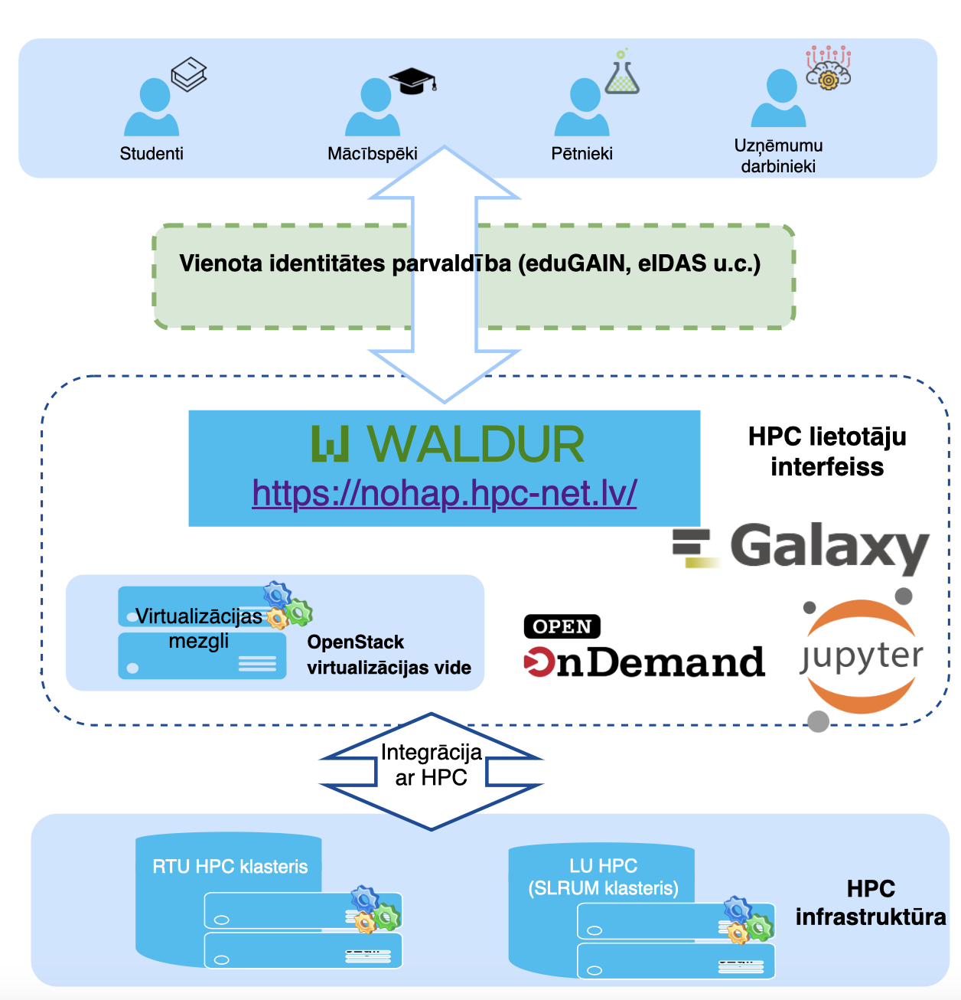

HPC Platform User Guide
This page provides instructions for using different tools and interfaces available through the High-performance Computing (HPC) platform.
The central element of the HPC platform is a user-friendly interface for reserving and accessing computing resources. The interface provides access to supercomputer and virtualization infrastructure (virtual classrooms), as well as HPC-enabled thematic web portals for data analysis and visualization.
